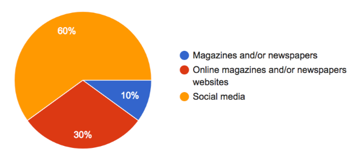
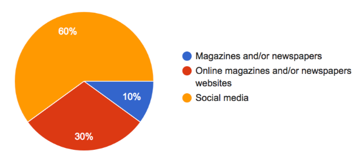

A charity case study created by myself on a real need from The Big Issue, suggested and in collaboration with Collage Works*
The Big Issue is a weekly news and entertainment magazine, it offers people facing poverty and exclusion the opportunity to earn their own money selling the magazine in the streets.
Their clients are in a age bracket that goes from 40 to 65. The Big Issue would like to engage and increase awareness about homelessness among Youth and possibly increase their income also from this channel.
Tools | Research methods: Focus groups, Online surveys, Online research
*an art and education charity based in the Haringey Cultural Quarter of London
Their clients are in a age bracket that goes from 40 to 65. The Big Issue would like to engage and increase awareness about homelessness among Youth and possibly increase their income also from this channel.
More...
Tools | Research methods: Focus groups, Online surveys, Online research
*an art and education charity based in the Haringey Cultural Quarter of London
SITUATION NOW
There is a certain average income per week that during the month of December increases considerably.
In December it can be an emotional sale while during the rest of the year can be a client base loyalty.
These clients are in a age bracket that goes from 40 to 65.
AIM
- Reach a younger target
- Increase awareness among Youth
- Engage Youth
- Monetise through Youth
- Reach age bracket 16-30 years old
- Increase awareness among Youth
- Engage Youth
- Monetise through Youth
- Reach age bracket 16-30 years old
RESEARCH PROCESS AND IDEAS
Focus Group
Ideas on how to reach a younger target developed during a meeting with young people
Awarness issue
– wristband / badge / pin showing support /connection to homelessness cause
- documentary on homelessness then sell on Netflix / Prime (stories, figures and stats)
Giving back free stuff
- creating and advertising free actitities / events - competitions (appeal to people’s CV)
- free samples /stickers
Appealing to the youth
- Social Media * videos * good /fun content (trending news presented by PERSONALITIES) * good campaigns on FB * video previews on FB * Short interesting tweets for content (video) on Twitter * theme (colour, content, etc) on Instagram
- Less Formal – putting a face to the big issue
- Podcast/Youtube (celebrities collaborations) “ it’s the new radio + TV “ and appeals to both demographics
- Youtubers that sell products/services – sponsor adsense
Topics
- Trending
- Politics
- Music spotlight
- Fashion
- Celebs
- Film /TV spotlight
- Jobs / Opportunities in depht specific opportunies, creative jobs
- Homeless issue
– wristband / badge / pin showing support /connection to homelessness cause
- documentary on homelessness then sell on Netflix / Prime (stories, figures and stats)
Giving back free stuff
- creating and advertising free actitities / events - competitions (appeal to people’s CV)
- free samples /stickers
Appealing to the youth
- Social Media * videos * good /fun content (trending news presented by PERSONALITIES) * good campaigns on FB * video previews on FB * Short interesting tweets for content (video) on Twitter * theme (colour, content, etc) on Instagram
- Less Formal – putting a face to the big issue
- Podcast/Youtube (celebrities collaborations) “ it’s the new radio + TV “ and appeals to both demographics
- Youtubers that sell products/services – sponsor adsense
Topics
- Trending
- Politics
- Music spotlight
- Fashion
- Celebs
- Film /TV spotlight
- Jobs / Opportunities in depht specific opportunies, creative jobs
- Homeless issue
Surveys
2 Online Surveys, taken through Google Forms, with a total of 21 young people participating. Participants have been asked about:
- their date of birth
it goes from 1981 to 1995
- if they have heard about The Big Issue before
- if they have bought the magazine before
- their main source of news and information

it goes from 1981 to 1995
- if they have heard about The Big Issue before
- if they have bought the magazine before
- their main source of news and information

- if interested in helping the cause, homelessness
- their opinion about the The Big Issue content on the Youtube channel
most say it’s not interesting, not engaging and didn’t even know there was a channel until told
- if The Big Issue develops an App to reach the Youth which of these features would make them download and use it. They could choose as many subjects as they liked between these and others of their choice: trending news, politics news, music spotlight, fashion news, articles about celebrities, film/TV spotlight, job opportunities, social awareness, game/quiz.
- their opinion about the The Big Issue content on the Youtube channel
most say it’s not interesting, not engaging and didn’t even know there was a channel until told
- if The Big Issue develops an App to reach the Youth which of these features would make them download and use it. They could choose as many subjects as they liked between these and others of their choice: trending news, politics news, music spotlight, fashion news, articles about celebrities, film/TV spotlight, job opportunities, social awareness, game/quiz.
Conclusions on the surveys:
The surveys give as a result that there is awareness of the magazine but no engagement to motivate them to buy it. It says also that there is a need of an interesting/entertaining online content. There is a need of a new Business Model, where the product is digital, it goes through Social Media, and it is able to monetise.
Online Research: The Big Issue resources
The Big Issue has a website for the foundation, for the magazine, for the shop that sells the magazine (paper) and other echo items, and for the social investment arm.
The magazine website has:
- competitions, e.g. :
1- Win the Delicious DVD boxset, containing series one and two of the comedy starring Dawn French and Emilia Fox
2- Win tickets to Isle of Dogs and an overnight hotel stay
- a subscription scheme
They are social, on Youtube, Facebook, Instagram, and Twitter.
There are amazing videos on Youtube – stories of vendors, celebrities telling how important The Big Issue is, a street cat named Bob, etc.
The magazine website has:
- competitions, e.g. :
1- Win the Delicious DVD boxset, containing series one and two of the comedy starring Dawn French and Emilia Fox
2- Win tickets to Isle of Dogs and an overnight hotel stay
- a subscription scheme
They are social, on Youtube, Facebook, Instagram, and Twitter.
There are amazing videos on Youtube – stories of vendors, celebrities telling how important The Big Issue is, a street cat named Bob, etc.
There is a need to utilize these resources in a better way.
Ideas developed after meeting, surveys and research
Produce videos More...
Sell videos More...
Create competitions in schools More...
Pop up stall instead of street selling
Create free events/activities More...
Involve more in Social Media More...
Less Formality : putting a face to The Big Issue can Engage Youth
Create an e-version of the magazine
You can already buy online, but if you can also read online it can increase sales so it can lead to:
Monetise
Create an app can Engage Youth
Ideation of an app
Creating an app for The Big Issue is one of the ideas developed, after the research, to reach and engage a younger target.
POSSIBLE REWARD POINTS SCHEMA
How to get points:
- Buy the magazine in the street - a #code needs to be put inside each magazine - you write the code in the app and get points.
- Refer a friend - if you tell a friend to register to the app he and you get points (he needs to put your player number in, during the registration).
- Read online the article of the week - answer in the app to some questions that every week will change and be related to the article of the week. If the answers are right you get points.
- Friendly buy - tell a friend to buy a copy and share the #code. You both get points.
- Promote an event - a contest or other at your school, workplace to let people know about The Big Issue or homelessness. You get lots of points.
What to get with points:
- If TBI establishes connections with famous people (singers, youtubers, sportives…) they could donate some of their time, or tickets for their concerts or performances.
A prise may be : - Meet * for a coffee or else.
- Shops may donate objects to the charity like: a phone, sports clothing or equipment, a virtual game, musical instruments, music/game CDs, books, an article about you on the magazine, …
THE BIG ISSUE GAME
POSSIBLE REWARD POINTS SCHEMA
How to get points:
- Buy the magazine in the street - a #code needs to be put inside each magazine - you write the code in the app and get points.
- Refer a friend - if you tell a friend to register to the app he and you get points (he needs to put your player number in, during the registration).
- Read online the article of the week - answer in the app to some questions that every week will change and be related to the article of the week. If the answers are right you get points.
- Friendly buy - tell a friend to buy a copy and share the #code. You both get points.
- Promote an event - a contest or other at your school, workplace to let people know about The Big Issue or homelessness. You get lots of points.
What to get with points:
- If TBI establishes connections with famous people (singers, youtubers, sportives…) they could donate some of their time, or tickets for their concerts or performances.
A prise may be : - Meet * for a coffee or else.
- Shops may donate objects to the charity like: a phone, sports clothing or equipment, a virtual game, musical instruments, music/game CDs, books, an article about you on the magazine, …
Final thoughts
This UX project has been my very first one; mostly made up of research though a further design of the app can eventually happen.
I found very interesting the approach of stepping back and listening to the potential users.
I found very interesting the approach of stepping back and listening to the potential users.